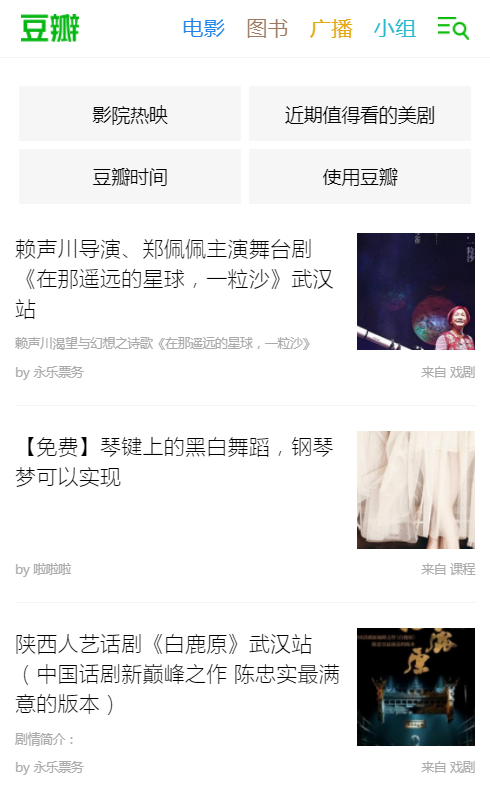
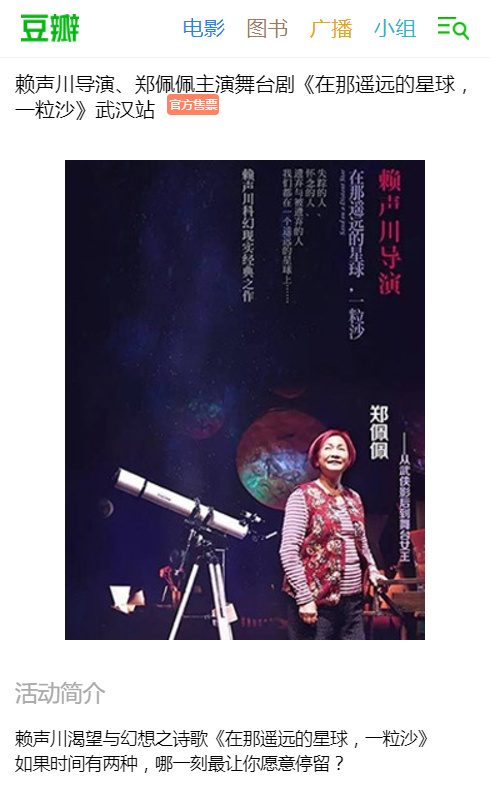
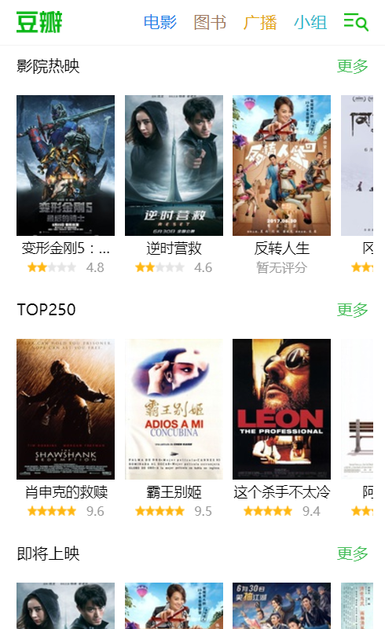
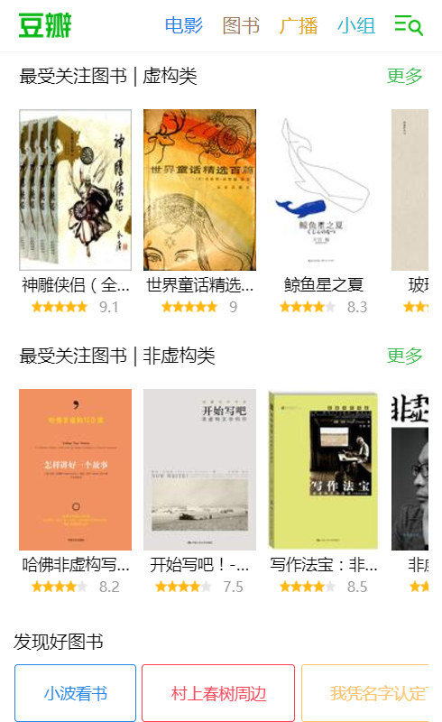
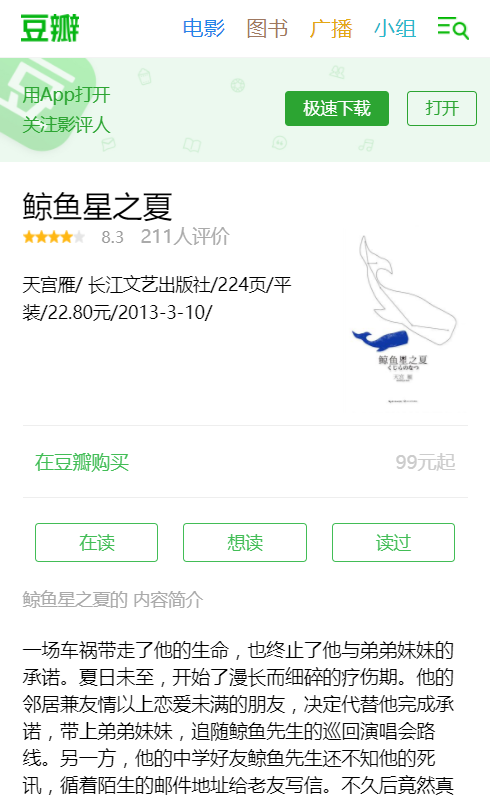
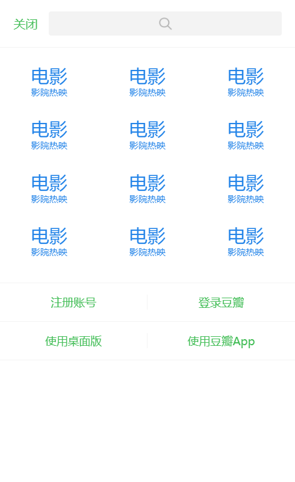
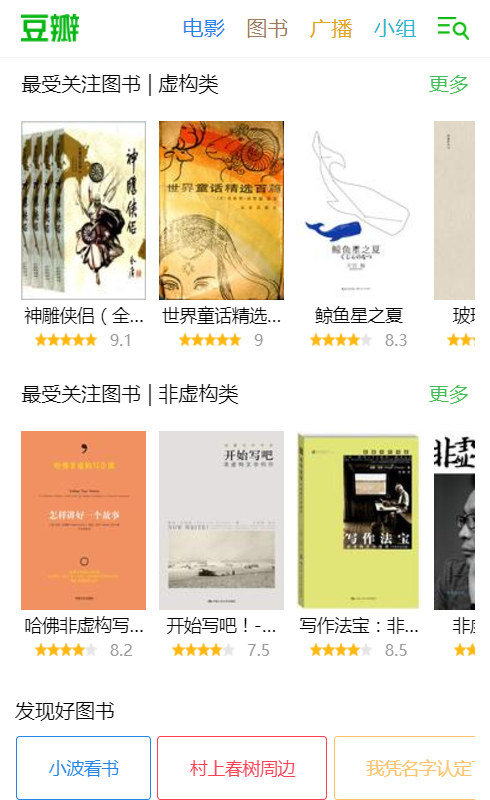
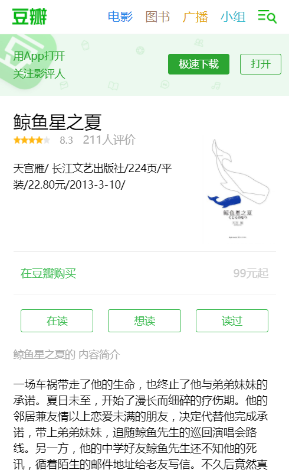
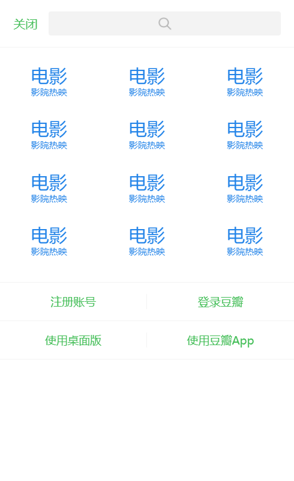

- Skill. 技能清单
能够用 HTML + CSS 编写语义化的代码，完成较复杂的布局。对HTML5,CSS3有一定的了解。
在 豆瓣(手机单页版) 项目中了解了 Vue，以及Vue的相关插件如vuex,vue-router， 项目使用Webpack打包，并且启用了 ES6 的新语法。了解 Node.js, express框架.
了解 Git Webpack 等开发工具。
使用Node, Express, MongoDB 搭建过简单的后端项目。
- Experience. 项目与实习经验
个人项目
豆瓣(手机单页版) 2017.6 Demo SourceCode
此项目是我学习Vue.js过程中的开发的一个比较完整的前端项目，目前完成了几个主要的视图。项目目录结构使用vue-cli的webpack模板生成，数据源使用的是豆瓣的API，并且使用了Vue官方的插件vuex与vue-router，http请求部分使用superagent完成。开发过程中了解了webpack的配置与使用。
     
  